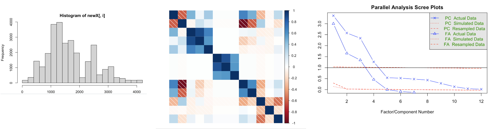

5. Factor analysis & the binomial test
Emma Mills and Amy Atkinson
Caution
This page is under construction for 24/25 and may be subject to change before the teaching week.
Introduction
This week is a crossover week between Amy and Emma.
Factor Analysis content is needed for learning. Questions will not be asked in the class test in week 20 on the Factor Analysis method.
The Binomial Test content is needed for learning, and the class test.
The rest of this page is split into two parts, Factor Analysis and Binomial Test. They each have their own associated lecture and notes.
Factor Analysis
Watch the Lecture on Factor Analysis here
Factor analysis is an analysis method that aims to take a large number of observed variables, and reduce these to a smaller set of distinct underlying latent variables. In the example below, we have the observed variables on the left. These are the things we can measure, or observe. On the right, we see the latent variables (PA1, PA2, PA3, and PA4), these are not directly measured by us (hence the term latent) and represent a reduction of variables. This is done through measuring how the observed variables “load” onto the latent variables (the loadings are the numbers on the arrows, higher loadings indicate stronger links to that latent variable) – they correlate more with each other than the other variables, which can indicate that they measure a similar underlying variable.
You may have taken a personality test, or other questionnaire style test where a lot of the questions seemed to ask about similar things. In the big five mini-IPIP scale, the two questions for extraversion are “Am the life of the party” and “Talk to a lot of different people at parties”. The expectation is that if there is indeed an underlying variable behind these two questions, then people’s responses should be similar to both questions (score 5 - strongly agree to one statement and you’d probably score the other the same).
Measures of association help answer the question ‘What is the relationship between two variables?’
Correlation looks at pairs of numerical variables
- X & Y below predict Z
- X & Y are completely separate
- X & Y are completely independent of each other
- X & Y below predict Z
- X & Y are completely separate
- X & Y are completely independent of each other
X is showing a larger correlation with Z than Y here
You can draw the diagram like this to show how much information X shares with Z and how much Y shares with Z
Sometimes the relationship between X & Y is not so independent: + X & Y here still predict Z + X & Y but now they are not completely separate + X & Y they share some information + They are correlated with each other + As well as being correlated with Z
We can draw this this way too…
The overlap between X & Y is still independent of their overlap with Z
In this example, the overlap between X & Y is now related to the overlap with Z to a much greater degree…
Multicollinearity
When we have too much overlap between our predictor variables it can be a problem. This is called multicollinearity.
When you have many predictor variables you need to check that they are not too highly correlated with each other. You do this by calling a correlation plot, where correlations > .80 may be problematic. If you have lots of observations, you may be okay, but your model may have problems
Mitigation
Choose a smaller set of variables
- By theory Group together alike variables
- Principal component analysis Estimate underlying structures
- Factor analysis
- Underlying structures are also known as “latent variables”
Factor Analysis
Finding underlying structure or latent variables + Latent variables should have three or more observed variables loading onto them + Correlations between those observed variables should be high + The observed variables should load only onto one variable
Before beginning:
- Standardise your variables
Factor analysis is quite jargon heavy:
Exploratory factor analysis (EFA) and Confirmatory factor analysis (CFA)
Where there is overlap, where variables ‘load’ onto factors:
The shared variance is called ‘communality’
And the unshared variance is called uniqueness
Performance
- A factor should have at least three variables that are loaded to a sufficient level
- Any one variable should have most of its loading on one factor 3.A factor should have good internal consistency (a common (and maybe overused) method is Cronbach’s alpha) 4.Factors should make theoretical sense
Snapshot of an example output below:
- The first column is the labels of the observed variables
- Columns 2 – 5 are the latent variable loadings for each of those observed variables.
- The first three factors each have 3+ of the observed variables
- Length is problematic here
Preparation
Remove outcome variables, categorical variables, ordinal variables
Visualise the prepared dataset
Inspect correlations (guidelines exist!)
Perform some EFA specific tests to determine if a factor analysis is feasible + KMO + Bartlett’s test of sphericity + Parallel analysis + Scree test (visualization) + Packages in R support these

- If the indications are good – then perform a factor analysis
Guidelines exist for all of the following:
Look for patterns inside the factors
Look for patterns between the factors
Look for communalities
Look for factor correlations
Test for internal consistency of the factors
Draw! Report!
Practice
You will need to review the Birthweight example to be able to complete WBA5.
You can choose any of the three examples to explore the process of Factor Analysis.
Birthweight script and data here, and codebook here
Questionnaire script and data here
Single Word Reading script and data here
Or, download all the materials here - treat yourself!
Binomial Test
Lecture material
Watch part two of the Week 5 lecture (on the binomial test) here. The lecture slides (both .ppt and .pdf) versions can be downloaded here.
Running the code in the lecture
Please note that binomial test will not be covered in the Week 5 lab - as described in the lecture, this is a very straightforward test to run in R that can be performed with just a single line of code.
To run the binomial test based on the example described in the lecture, you would simply run the following code in R:
binom.test(13, 14, 0.5)
Exact binomial test
data: 13 and 14
number of successes = 13, number of trials = 14, p-value = 0.001831
alternative hypothesis: true probability of success is not equal to 0.5
95 percent confidence interval:
0.6613155 0.9981932
sample estimates:
probability of success
0.9285714 Independent learning activities
Below are some independent learning activities you can have a go at to help consolidate the lecture content on the binomial test. These are optional, but recommended. The answers are found below.
Activity 1
One sample-test or binomial test?
Disclaimer: All of these statistics are made up.
For the following examples, write down whether you think the test conducted should be a one-sample t-test or a binomial test.
You are the coach of a football team. You are interested in whether the running distance of your players significantly differs from the England national football team. You know, on average, England football players run 10km per game.
You are the coach of a football team. You are interested in whether the proportion of games your team scores a goal is significantly different from that of the England national team. You know that on average, the England national team scores a goal in 60% of games.
You are a neonatal doctor (a doctor who specialising in caring for newborn babies). You think that babies born in your hospital are quite small. You are interested in whether the proportion of babies who are classed as “small for gestational age” differs between your hospital and the UK average (10%).
You are a neonatal doctor (a doctor who specialising in caring for newborn babies). You think that babies that are born in your hospital are quite small. You are interested in whether the average weight of babies born at your hospital is significantly less than the UK average (3350g).
Activity 2
Identifying “success”
You are the headteacher of a grammar school which has an entrance exam. You are interested in whether the proportion of children failing the test differs significantly from last year. The failure rate last year was 24% (or 0.24 expressed as a proportion).
You have developed a new flu vaccine. You are interested in whether the proportion of people who develop side effects after your vaccine differs from the flu vaccine currently used by the NHS (37%, or 0.37 expressed as a proportion).
Answers
Activity 1:
One-sample t-test. The value for each individual is continuous.You are interested in whether the mean number of km runs differs from a known value.
Binomial test. Two possible outcomes: team scores or team does not score). You are interested in whether the proportion that a given outcome occurs (i.e. your team scores a goal) differs from a known value.
Binomial test. Two possible outcomes: Each baby’s outcome is either “small for gestational age” or “not small for gestational age”. You are interested in whether the proportion that a given outcome occurs (i.e. small for gestational age) differs from a known value.
One-sample t-test. The value for each individual is continuous. You are interested in whether the mean weight of babies at your hospital differs from a known value.
Take-home message: A one sample t-test is used when you are interested in comparing the mean of a sample to a known value. The binomial test is used when you are interested in comparing a sample’s proportion of “successes” to a known value.
Activity 2
Success: failing the test. Failure: passing the test.
Success: Has side effects. Failure: Does not have side effects.
Take home message: Success refers to the outcome you are interested in. Sometimes this might be counterintuitive to how we typically think about ‘success’ (e.g. in the.
Asking questions
If you have any questions about the binomial test, please post them on the discussion board on moodle. If you prefer to remain anonymous, there is a qualtrics link on moodle called “The Binomial Test: Post questions anonymously” where you can ask your questions. I will then copy your question to the discussion forum and answer it there and/or cover it in next Q&A session.